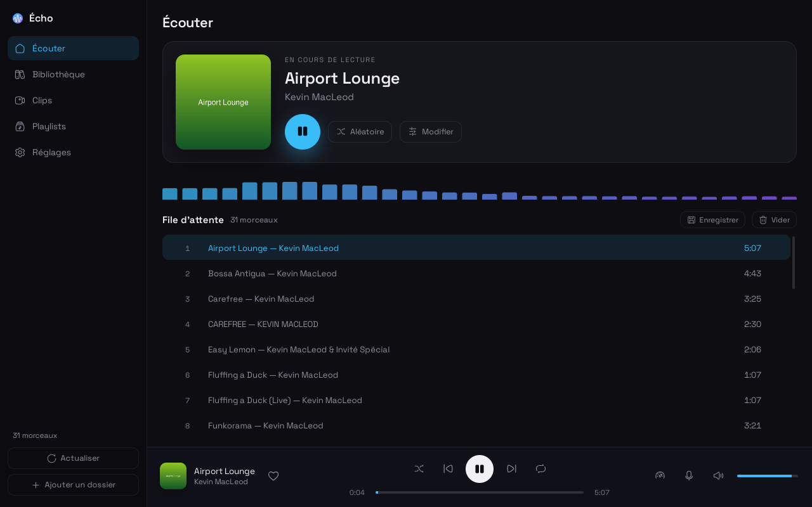
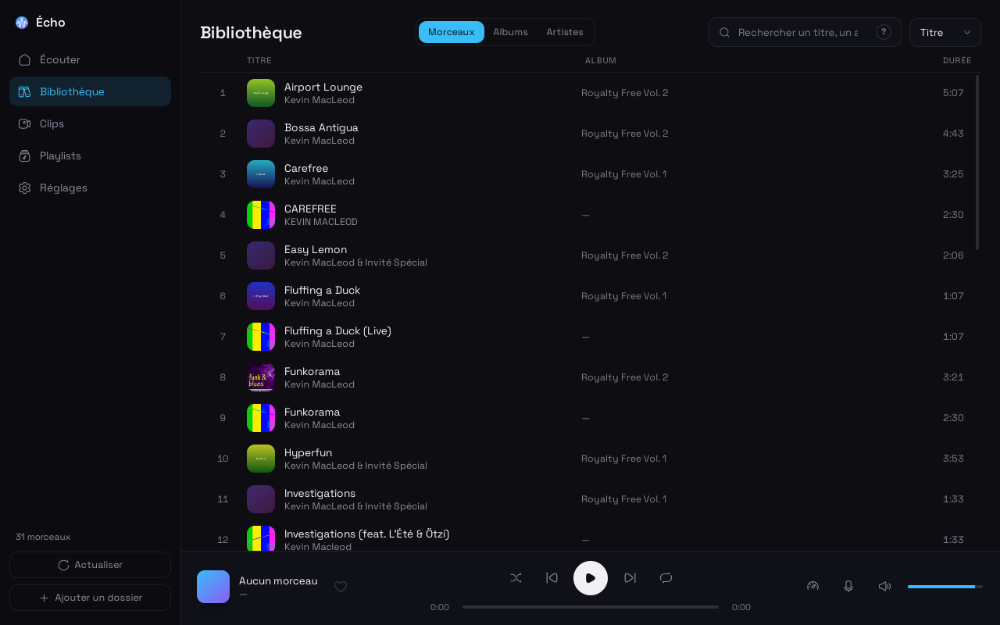
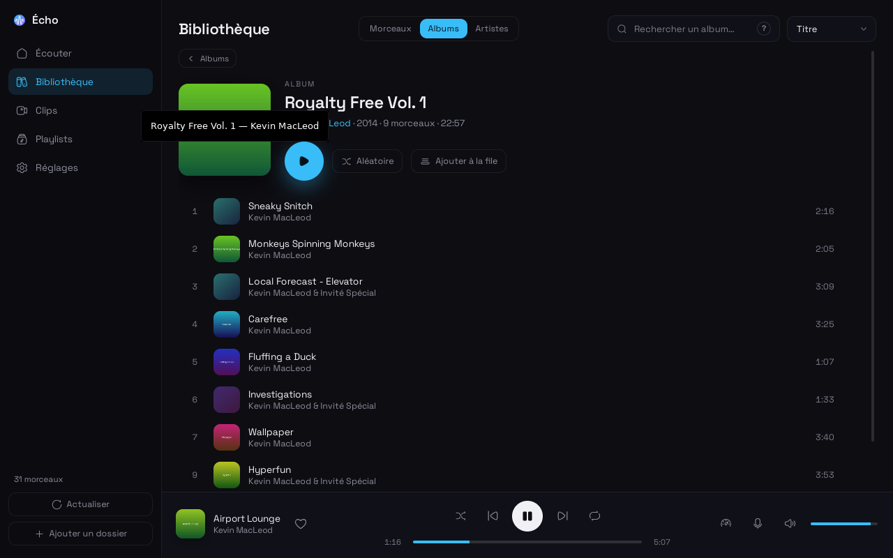
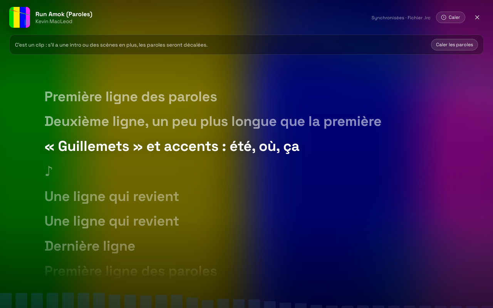
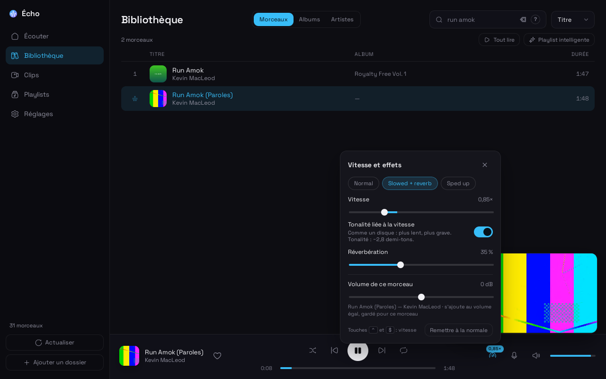
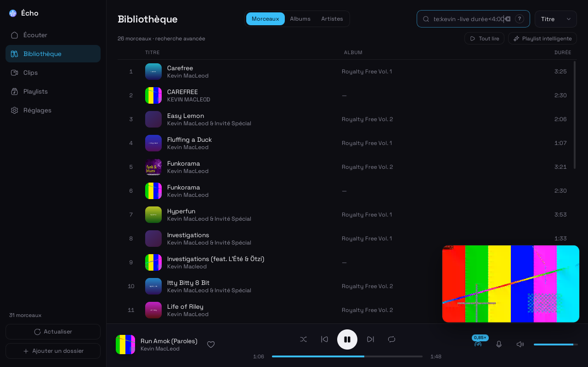
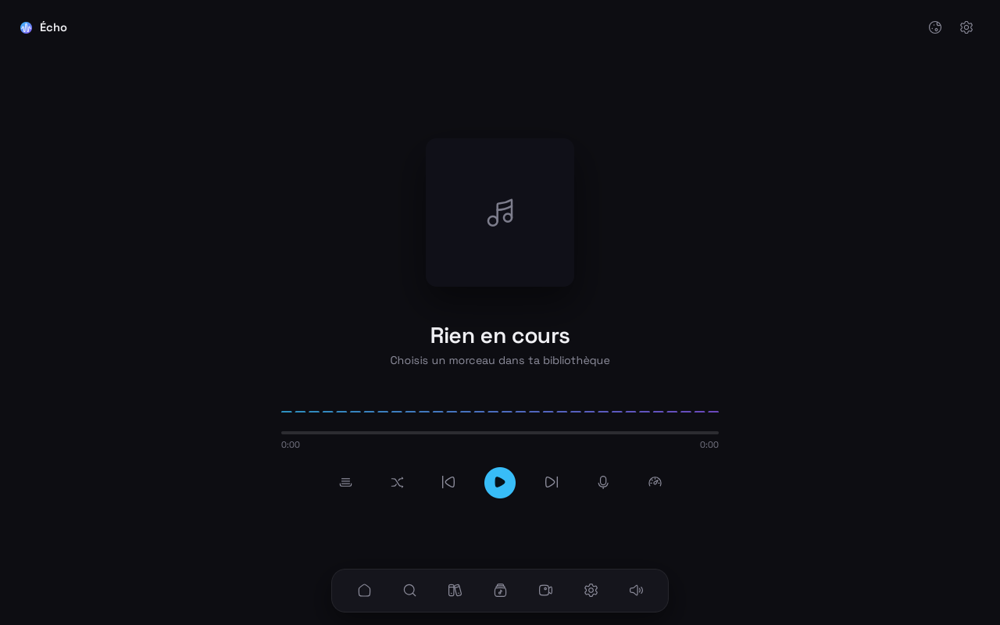
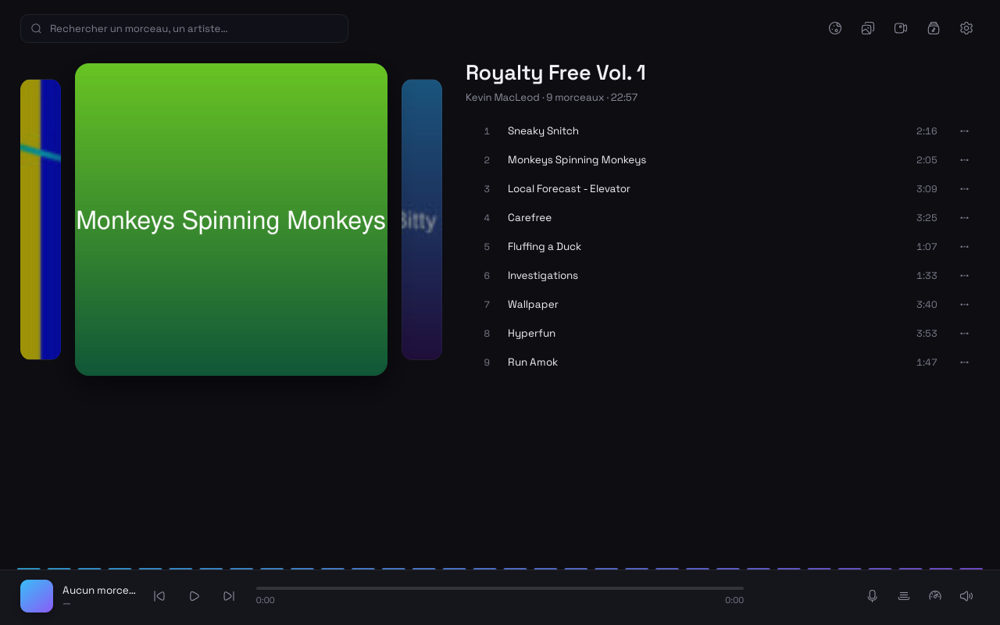
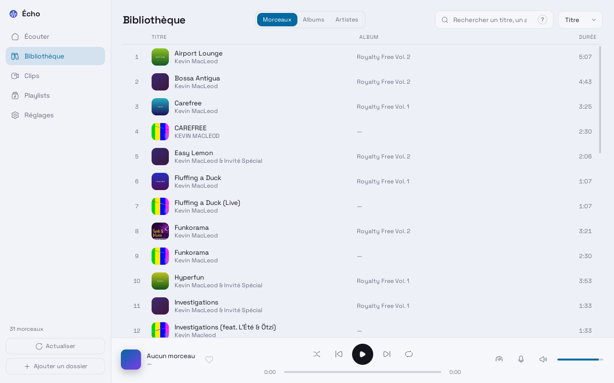

Tu gardes la main sur tes fichiers
Écho lit ta musique là où elle se trouve. Il ne la copie pas, ne la déplace pas et ne la modifie jamais. Même tes corrections de titre ou de pochette restent à part, et tu peux revenir à l'original à tout moment.
Écho joue les fichiers que tu possèdes déjà. Pas de compte, pas de publicité, pas d'abonnement, pas de connexion obligatoire. Tu lui montres un dossier, il trouve chaque morceau, sa pochette et ses paroles, et te laisse écouter.

Tes fichiers t'appartiennent. Ton lecteur devrait fonctionner comme eux : sur ta machine, à ta façon, sans rien te demander en échange.
Écho lit ta musique là où elle se trouve. Il ne la copie pas, ne la déplace pas et ne la modifie jamais. Même tes corrections de titre ou de pochette restent à part, et tu peux revenir à l'original à tout moment.
Tu l'ouvres, tu écoutes. Tes playlists, tes réglages et tes écoutes restent sur ta machine. Rien n'est envoyé à qui que ce soit, sauf les services en ligne que tu actives toi-même.
Écrit en Rust avec Tauri : une application native qui s'ouvre vite et reste légère. Touches média, widget du bureau, icône dans la barre, notification à chaque morceau : Écho se comporte comme une vraie application de bureau.
Une bibliothèque sérieuse, des outils pour écouter comme tu l'aimes, et une interface qui s'efface devant la musique.
Les nouveaux fichiers apparaissent tout seuls. Les analyses suivantes ne relisent que ce qui a changé, donc la bibliothèque reste rapide même avec des dizaines de milliers de morceaux.


Une grille de pochettes, puis la page d'un album avec ses pistes dans l'ordre du disque. La page d'un artiste rassemble ses morceaux les plus écoutés, ses albums, ses featurings et ses clips.
En plein écran, avec L, la ligne chantée s'illumine. Un clic sur une ligne y saute. Les paroles viennent d'un fichier .lrc, des tags ou, si tu l'actives, d'une base libre de paroles synchronisées.


De 0,5× à 2×. Tu gardes la voix naturelle, ou tu laisses la tonalité suivre la vitesse, comme sur un disque. Les préréglages Slowed + reverb et Sped up sont là pour démarrer.
Combine les filtres dans la même recherche : artiste:ninho, année>2018, durée<3:00, est:favori, -live. Une recherche se garde en playlist intelligente, qui se remplit seule au fil de tes ajouts.

Webm, mp4 ou mkv : la vidéo suit le son, qui garde le fondu enchaîné et l'égaliseur. Plein écran avec F, ou mini-fenêtre qui reste à l'écran pendant que tu parcours ta bibliothèque.
Glisse un morceau pour le déplacer, ou utilise Alt + ↑ ↓. Enregistre la file comme playlist, et importe ou exporte au format M3U pour VLC, foobar2000 ou Winamp.
Favoris, ajoutés récemment, les plus écoutés, jamais écoutés, une liste par artiste. Les statistiques restent sur ta machine.
Le même morceau en MP3 et en FLAC ? Écho signale le meilleur fichier. Un doublon se masque d'un clic, et le fichier n'est jamais supprimé.
Une fenêtre large, une fenêtre étroite posée dans un gestionnaire de fenêtres en mosaïque, ou un album plein écran : Écho s'adapte à la place que tu lui laisses.



Un lecteur doit s'effacer. Voilà ce que tu n'auras jamais à subir.
Choisis ton système. Le bouton télécharge directement le fichier de la dernière version, sans passer par une autre page.
Dernière version : 1.4.0 · toutes les versions
Double-clique sur le fichier, suis les étapes, et Écho apparaît dans le menu Démarrer. Les mises à jour se font ensuite depuis l'application.
Télécharger le .exePréfères le format .msi ? Télécharger le .msi
Installe-le avec le gestionnaire de paquets. Il ajoute l'entrée de menu et les dépendances.
Télécharger le .debDans un terminal : sudo apt install ./Echo_*.deb
Un seul fichier, aucune installation. Rends-le exécutable, puis double-clique dessus.
Télécharger l'AppImagePuis chmod +x Echo_*.AppImage
Chaque fichier est signé par Écho : l'application refuse une mise à jour qui ne vient pas de l'équipe. Pour compiler toi-même, la marche à suivre est dans la page Télécharger.
Oui, à vie. Écho est distribué sous licence MIT : gratuit, libre, et son code source est public sur GitHub.
Non. Écho fonctionne hors ligne. Les seules connexions sont la vérification des mises à jour (désactivable) et, si tu les actives, les paroles et pochettes en ligne ainsi que les photos d'artistes.
mp3, flac, m4a, aac, ogg, opus, wav, aiff, wma et d'autres formats moins courants. Les vidéos (mp4, webm, mkv, mov) se lisent pour leur son, et leur image s'affiche dans la section Clips.
Jamais. Les corrections de titre, d'artiste ou de pochette sont enregistrées à côté, dans les données d'Écho, et tu peux les annuler.
Pas pour l'instant : Écho vise Linux et Windows. Le code étant ouvert, rien n'empêche de le compiler ailleurs, mais ce n'est pas testé.
Écho vérifie les nouvelles versions toutes les six heures. Il peut les installer seul, ou simplement te prévenir, au choix dans les réglages.
Télécharge Écho, ajoute ton dossier de musique, et lance le premier morceau. Il ne te demandera rien d'autre.